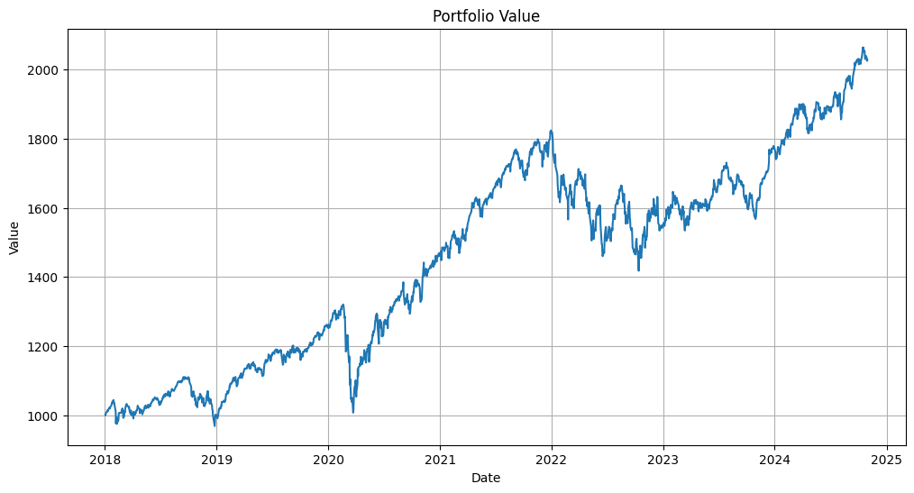

Table of Contents
Strategy Details
The study develops a trading system using polynomial moving regression models to analyze Nasdaq100 stocks from 2017 to March 2024, demonstrating that these models can effectively identify stock trends and generate profitable trading signals. Among the polynomial models, the fourth-degree polynomial MRB achieved the highest average net profit based on the author's findings.
Key Components
- Fourth-degree Polynomial MRB:
- Upper Band: 𝛽_0+𝛽_1*𝑋+𝛽_2*𝑋^2 +𝛽_3*𝑋^3 +𝛽_4*𝑋^4 + 2S
- Lower Band: 𝛽_0+𝛽_1*𝑋+𝛽_2*𝑋^2 +𝛽_3*𝑋^3 +𝛽_4*𝑋^4 - 2S
As the author mentions that the fourth-degree polynomial MRB achieved the highest average net profit, in the code below, I will apply this fourth-degree polynomial MRB to S&P 500 to see if the strategy can generate profit and see if some further improvement can be imposed to the strategy.
# Data Collection and Setup
# ------------------------
# Import necessary libraries for data manipulation, web scraping, and financial data
import os
import requests
import pandas as pd
import numpy as np
# Suppress warnings to keep output clean
import warnings
warnings.filterwarnings("ignore")
# Web Scraping S&P 500 Companies
# -----------------------------
# Fetch the list of S&P 500 companies from Wikipedia using requests
# The data is stored in a table on the Wikipedia page
url = 'https://en.wikipedia.org/wiki/List_of_S%26P_500_companies'
response = requests.get(url)
html = response.content
df = pd.read_html(html, header=0)[0] # Read the first table from the HTML content
# Extract the stock symbols (tickers) from the DataFrame
tickers = df['Symbol'].tolist()
# Data Loading Function
# -------------------
# Import yfinance for fetching stock data from Yahoo Finance
import yfinance as yf
def load_data(symbol):
"""
Load historical stock data for a given symbol from 2010 to 2024.
If data doesn't exist locally, download it from Yahoo Finance.
Args:
symbol (str): Stock ticker symbol
Returns:
pandas.DataFrame: Historical stock data or None if data is unavailable
"""
# Create directory for storing data if it doesn't exist
direc = 'data_2010_2024/'
os.makedirs(direc, exist_ok=True)
file_name = os.path.join(direc, symbol + '.csv')
# Download data if not already present
if not os.path.exists(file_name):
ticker = yf.Ticker(symbol)
df = ticker.history(start='2010-01-01', end='2024-10-31')
df.to_csv(file_name)
# Load and process the data
df = pd.read_csv(file_name, index_col=0)
df.index = pd.to_datetime(df.index, utc=True).tz_convert('US/Eastern')
df['date'] = df.index
# Remove file if no data was found
if len(df) == 0:
os.remove(file_name)
return None
return df
# Data Collection and Processing
# ----------------------------
# Dictionary to store data for each ticker
holder = {}
ticker_with_data = []
# Load data for each ticker and store successful loads
for symbol in tickers:
df = load_data(symbol)
if df is not None:
holder[symbol] = df
ticker_with_data.append(symbol)
tickers = ticker_with_data[:] # Update tickers list with only those that have data
print(f'Loaded data for {len(tickers)} companies')
# Data Cleaning and Feature Engineering
# ----------------------------------
# For each ticker:
# 1. Keep only 'Open' and 'Close' prices
# 2. Rename columns to lowercase
# 3. Convert index to date format
for ticker in tickers:
holder[ticker] = holder[ticker][['Open', 'Close']]
holder[ticker].columns = ['open', 'close']
holder[ticker].index = holder[ticker].index.date
# Calculate Technical Indicators
# ----------------------------
# For each ticker, calculate:
# - Daily price changes
# - 50-day moving average
# - 50-day standard deviation
# - Higher-order terms of moving average (for polynomial regression)
for ticker in tickers:
holder[ticker]['price change'] = holder[ticker]['open'].pct_change()
holder[ticker]['50 MA'] = holder[ticker]['close'].rolling(window=50).mean()
holder[ticker]['50 STD'] = holder[ticker]['close'].rolling(window=50).std()
holder[ticker]['50 MA^2'] = holder[ticker]['50 MA']**2
holder[ticker]['50 MA^3'] = holder[ticker]['50 MA']**3
holder[ticker]['50 MA^4'] = holder[ticker]['50 MA']**4
holder[ticker].dropna(inplace=True) # Remove rows with missing values
# Update tickers list to include only those with valid data after calculations
tickers = [ticker for ticker in tickers if len(holder[ticker]) > 0]
Code Explanation
This code section implements the core strategy components:
- Data Collection:
- Web scrapes S&P 500 company list from Wikipedia
- Downloads historical stock data using yfinance
- Implements efficient data caching system
Strategy Improvements
In our analysis of the polynomial regression trading system, we identified two potential areas for improvement:
upper_range = [0.5, 1, 1.5, 2, 2.5, 3, 3.5]
lower_range = [0.5, 1, 1.5, 2, 2.5, 3, 3.5]
ls_upper_range = []
ls_lower_range = []
ls_profit_loss_test = []
ls_profit_loss_validate = []
ls_count_loss = []
ls_count_profit = []
# Based on the validation period, we can find the optimal upper and lower range of 50 std for each stocks. and put the result in a dataframe
for upper_coeff in upper_range:
# print(uppder_coeff)
for lower_coeff in lower_range:
profitable_tickers = []
for ticker in tickers_with_data:
X = holder_train[ticker][['50 MA', '50 MA^2','50 MA^3','50 MA^4']]
Y = holder_train[ticker]['close']
model.fit(X, Y)
residual_std = np.sqrt(mean_squared_error(Y, model.predict(X)))
apply_model(model, holder_validate[ticker], residual_std, 1000, upper_coeff, lower_coeff)
apply_model(model, holder_test[ticker], residual_std, 1000, upper_coeff, lower_coeff)
if holder_validate[ticker]['profit/loss'][-1] > 1000:
profitable_tickers.append(ticker)
profit_loss_validate = []
profit_loss_test = []
count_profit_test = 0
count_loss_test = 0
for ticker in profitable_tickers:
profit_loss_validate.append(holder_validate[ticker]['profit/loss'][-1])
profit_loss_test.append(holder_test[ticker]['profit/loss'][-1])
if holder_test[ticker]['profit/loss'][-1] > 1000:
count_profit_test += 1
else:
count_loss_test += 1
ls_upper_range.append(upper_coeff)
ls_lower_range.append(lower_coeff)
ls_profit_loss_test.append(sum(profit_loss_test))
ls_profit_loss_validate.append(sum(profit_loss_validate))
ls_count_loss.append(count_loss_test)
ls_count_profit.append(count_profit_test)
Code Explanation
This code section implements the optimization process:
- Parameter Testing:
- Tests multiple coefficient combinations
- Evaluates performance across validation and test periods
- Tracks profit/loss metrics for each combination
upper range lower range profit/loss_test profit/loss_validate count_profit count_loss total return test total return validate
47 3.5 3.0 384095.504832 205876.930184 141 35 1.182361 0.169755
48 3.5 3.5 389607.060488 209383.791411 144 35 1.176576 0.169742
45 3.5 2.0 378071.612806 203257.436364 143 31 1.172825 0.168146
46 3.5 2.5 376251.578185 203488.799631 139 35 1.162365 0.169476
42 3.5 0.5 362159.260934 195705.791911 133 35 1.155710 0.164915
upper range lower range profit/loss_test profit/loss_validate count_profit count_loss total return test total return validate
6 0.5 3.5 715662.478492 439998.591470 270 77 1.062428 0.268007
5 0.5 3.0 699932.645045 430829.341319 262 78 1.058625 0.267145
4 0.5 2.5 688829.472534 427439.917381 256 82 1.037957 0.264615
3 0.5 2.0 690856.399502 429636.072416 255 87 1.020048 0.256246
2 0.5 1.5 675490.978816 417441.148357 244 89 1.028501 0.253577
train_start_date = datetime.strptime('2010-01-01', '%Y-%m-%d').date()
ls_train_end_date = ['2016-12-31', '2017-12-31', '2018-12-31', '2019-12-31', '2020-12-31', '2021-12-31', '2022-12-31']
ls_validation_start_date = ['2017-01-01', '2018-01-01', '2019-01-01', '2020-01-01', '2021-01-01', '2022-01-01', '2023-01-01']
ls_validation_end_date = ['2017-12-31', '2018-12-31', '2019-12-31', '2020-12-31', '2021-12-31', '2022-12-31', '2023-12-31']
ls_test_start_date = ['2018-01-01', '2019-01-01', '2020-01-01', '2021-01-01', '2022-01-01', '2023-01-01', '2024-01-01']
ls_test_end_date = ['2018-12-31', '2019-12-31', '2020-12-31', '2021-12-31', '2022-12-31', '2023-12-31', '2024-10-31']
cumulative_profit_loss_test = 0
ls_year = ['2018', '2019', '2020', '2021', '2022', '2023', '2024']
ls_profit_loss = []
ls_count_profit = []
ls_count_loss = []
ls_count_no_trade = []
ls_initial_investment = []
initial_investment = 1000
portfolio_value = []
Code Explanation
This code section implements the annual rebalancing strategy with the following key components:
- Performance Tracking: The code tracks various metrics including:
- Profit/loss for each stock and the overall portfolio
- Count of profitable and unprofitable trades
- Number of stocks with no trading activity
- Annual Rebalancing: The portfolio is rebalanced annually, with the previous year's final portfolio value becoming the new initial investment.
# Assume that we use the training data to train the model and use the validation data to select the profitable stocks on an annual basis.
# To simplify the process, we assume all the trade will be closed at the end of the test period if the position is still active.
# Ignore the opmization of the upper and lower range of 50 std for each stock for now
for i in range(len(ls_year)):
# print(ls_year[i])
train_end_date = datetime.strptime(ls_train_end_date[i], '%Y-%m-%d').date()
validate_start_date = datetime.strptime(ls_validation_start_date[i], '%Y-%m-%d').date()
validate_end_date = datetime.strptime(ls_validation_end_date[i], '%Y-%m-%d').date()
test_start_date = datetime.strptime(ls_test_start_date[i], '%Y-%m-%d').date()
test_end_date = datetime.strptime(ls_test_end_date[i], '%Y-%m-%d').date()
holder_train = {}
holder_validate = {}
holder_test = {}
tickers_with_data = []
for ticker in tickers:
holder_train[ticker] = holder[ticker].loc[train_start_date:train_end_date]
holder_validate[ticker] = holder[ticker].loc[validate_start_date:validate_end_date]
holder_test[ticker] = holder[ticker].loc[test_start_date:test_end_date]
if not holder_train[ticker].empty and not holder_validate[ticker].empty and not holder_test[ticker].empty:
tickers_with_data.append(ticker)
# Train the model using the training data
model = LinearRegression()
for ticker in tickers_with_data:
# print(ticker)
Y = holder_train[ticker]['open']
X = holder_train[ticker][['50 MA', '50 MA^2','50 MA^3','50 MA^4']]
model.fit(X, Y)
residual_std = np.sqrt(mean_squared_error(Y, model.predict(X)))
apply_model(model, holder_validate[ticker], residual_std, 1)
apply_model(model, holder_test[ticker], residual_std, 1)
# Select the profitable stocks in the validation data
profitable_tickers = []
for ticker in tickers_with_data:
if holder_validate[ticker]['profit/loss'][-1] > 1:
profitable_tickers.append(ticker)
profit_loss = []
count_profit_test = 0
count_loss_test = 0
count_no_trade = 0
# Build an equal-weighted portfolio for the profitable stocks at the beginning of the year
stock_allocation = initial_investment/len(profitable_tickers)
ls_initial_investment.append(initial_investment)
for ticker in profitable_tickers:
holder_test[ticker]['profit/loss'] = holder_test[ticker]['profit/loss']*stock_allocation
profit_loss.append(holder_test[ticker]['profit/loss'][-1] - stock_allocation )
portfolio_value.append(holder_test[ticker]['profit/loss'])
if holder_test[ticker]['profit/loss'][-1] > stock_allocation :
count_profit_test += 1
elif holder_test[ticker]['profit/loss'][-1] == stock_allocation :
count_no_trade += 1
else:
count_loss_test += 1
# Keep the daily profit/loss for each year in the list of portfolio value
initial_investment = sum(profit_loss) + initial_investment
ls_profit_loss.append(sum(profit_loss))
ls_count_profit.append(count_profit_test)
ls_count_loss.append(count_loss_test)
ls_count_no_trade.append(count_no_trade)
Code Explanation
This code section implements the annual rebalancing strategy with the following key components:
- Data Splitting: For each year, the data is split into training, validation, and test periods using predefined date ranges.
- Model Training: A polynomial regression model (degree 4) is trained for each stock using the training data, with features derived from the 50-day moving average.
- Stock Selection: Stocks are filtered based on data availability across all three periods (training, validation, and test).
year profit/loss Balance at the year start cumulative profit/loss (%) count_profit count_loss count_no_trade Predicted profitable trade
0 2018 -2.202014 1000.000000 -0.220201 106 119 37 262
1 2019 220.986655 997.797986 22.147435 76 18 11 105
2 2020 194.334352 1218.784641 15.944929 201 109 11 321
3 2021 265.901913 1413.118993 18.816668 178 50 52 280
4 2022 -167.051693 1679.020907 -9.949352 64 195 21 280
5 2023 24.211068 1511.969213 1.601294 36 46 14 96
6 2024 256.719170 1536.180281 16.711526 142 61 10 213
value
2018-01-02 1000.000000 2024-10-24 1795.774697
2018-01-03 1000.000000 2024-10-25 1804.632547
2018-01-04 1005.352654 2024-10-28 1800.147331
2018-01-05 1007.647670 2024-10-29 1792.337199
2018-01-08 1009.755892 2024-10-30 1792.899451
1719 rows × 1 columns
Performance Analysis
The results show:
- Strategy Performance:
- Mixed results across different years
- Strong performance in 2019, 2020, and 2021
- Challenging periods in 2018 and 2022
# Plot the portfolio value
plt.figure(figsize=(15, 6))
plt.plot(df_portfolio_value['value'])
plt.title('Portfolio Value')
plt.xlabel('Date')
plt.ylabel('Value')
plt.show()

import numpy as np
# Calculate daily returns
df_portfolio_value['daily_returns'] = df_portfolio_value['value'].pct_change()
# Calculate metrics
# 1. Annual Return
annual_return = (df_portfolio_value['daily_returns'].mean() * 252) * 100 # 252 trading days
# 2. Sharpe Ratio (assuming risk-free rate of 0.02 or 2%)
rf = 0.02 # risk free rate
excess_returns = df_portfolio_value['daily_returns'] - rf/252
sharpe_ratio = np.sqrt(252) * excess_returns.mean() / excess_returns.std()
# 4. Maximum Drawdown
portfolio_value_series = df_portfolio_value['value']
rolling_max = portfolio_value_series.expanding().max()
drawdowns = (portfolio_value_series - rolling_max) / rolling_max
max_drawdown = drawdowns.min() * 100
# Print results
print(f"Performance Metrics:")
print(f"total return: {df_portfolio_value['value'][-1]/1000 - 1:.2f}")
print(f"Annual Return: {annual_return:.2f}%")
print(f"Sharpe Ratio: {sharpe_ratio:.2f}")
print(f"Maximum Drawdown: {max_drawdown:.2f}%")
Conclusion
Our analysis of the polynomial moving regression band trading system reveals several key findings:
Key Findings
- Overall Performance:
- The trading system demonstrates good profitability potential
- Results show promising returns for selected stocks
- Stock Selection:
- Not all stocks show satisfactory performance
- A validation set is necessary to identify potentially profitable stocks
- Model Parameters:
- The coefficient of standard deviations from the regression model requires further mathematical validation
- Optimization of these parameters could improve strategy performance
- Annual Rebalancing:
- Annual reselection of profitable stocks tends to yield worse results
- More frequent rebalancing may be necessary for optimal performance